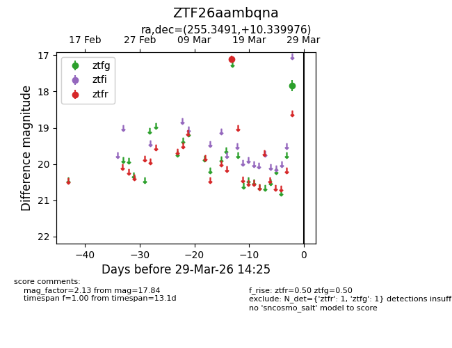
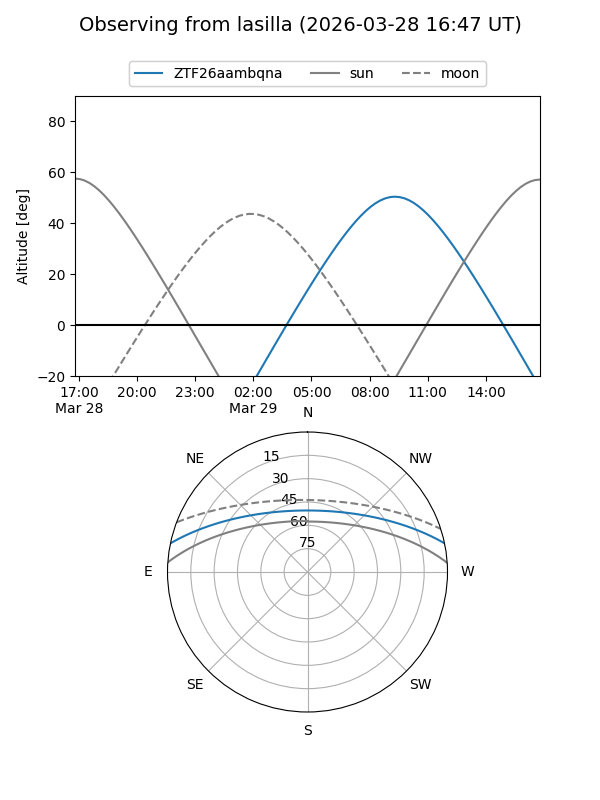
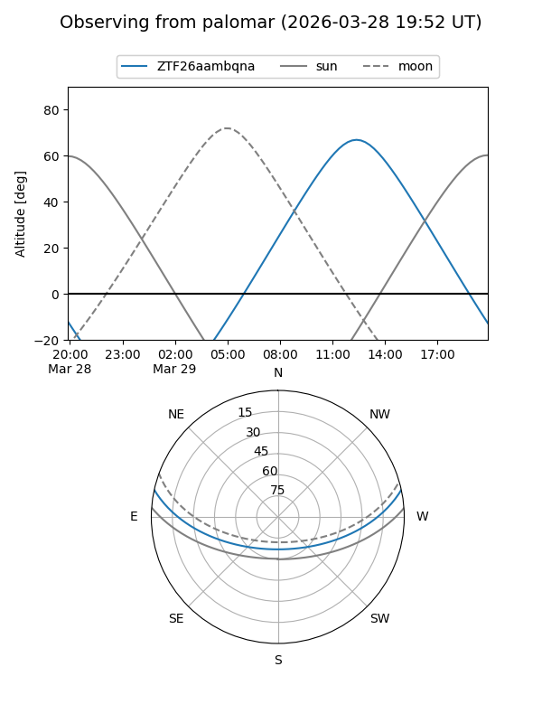

ZTF26aambqna
Target ZTF26aambqna at 2026-03-29 14:28
Aliases and brokers:
FINK: link
Lasair: link
ALeRCE: link
alt names
ZTF26aambqna (ztf,fink_ztf)
Coordinates:
equatorial (ra, dec) = 255.3491,+10.33998
equatorial (HMS+DMS) = 17:01:23.79,+10:20:23.91
galactic (l, b) = (29.8185,+29.09513)
Flags:
Photometry:
last ztfg=17.84, ztfr=17.11
1 ztfg, 1 ztfr detections
Lightcurve

Visibility


Additional plots